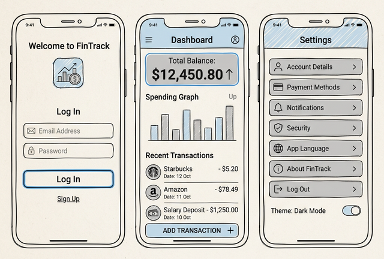

Estudo de Caso 3 — UX/UI e Wireframes
Objetivo da Semana
Traduzir os Requisitos Funcionais definidos na semana anterior em interfaces visuais de baixa fidelidade (Wireframes). Isso garante que o grupo planeje as telas antes da fase de desenvolvimento prático.
Passo a Passo da Atividade
Mapeiem quais telas são essenciais para executar os seus RFs. Por exemplo, pelo RF01, vocês precisam de "Login/Cadastro". Para o RF02, "Formulário de Entrada", e assim por diante. Façam rascunhos rápidos.
Utilizem ferramentas para transpor o papel no formato Wireframe (modelos apenas em preto, branco e escala de cinza, focados nos componentes e navegação, como botões, textos, listas). Crie no mínimo 5 telas primárias.
Anexe as 5 imagens (Wireframes) com legenda embaixo de cada uma que explique o objetivo da tela dentro do documento da Semana 2. Esse Documento unificado é a base que guiará o restante do projeto!
Para concluir as atividades desta semana, reúna todas as informações e artefatos gerados nos passos anteriores e preencha o template oficial de entrega. Faça uma cópia do documento para a sua conta Google e compartilhe-o com o professor.
📱 Estudo de Caso: FinanCampus
Veja como o grupo do FinanCampus realizou a prototipação e documentou os requisitos nesta semana.

Wireframes criados no Figma (6 telas):
- Login / Cadastro: campos de e-mail e senha, botão de entrar e link para criar conta.
- Home / Dashboard: saldo do mês em destaque, últimas 3 transações e botão flutuante (+) para nova transação.
- Lista de Transações: ListView com filtro por mês, tipo e categoria; cada item exibe ícone, tipo, descrição, valor e data.
- Nova Transação: formulário com campos de tipo (Dropdown Renda/Despesa), valor (numérico), categoria (Dropdown), data (DatePicker) e descrição (opcional).
- Detalhe / Editar Transação: exibe os dados da transação com botões de editar e excluir.
- Configurações: e-mail do usuário e botão de logout.
Documento de Requisitos v1.0 entregue com 8 páginas incluindo: frase de visão, persona da Mariana, 8 RFs, 4 RNFs e prints dos 6 wireframes do Figma.
Heurística aplicada: o grupo adicionou uma mensagem de feedback visual (SnackBar de sucesso) após salvar uma transação — aplicando a heurística de Visibilidade do Status do Sistema.